chriseddie.com / CBT Nuggets
chriseddie.com / CBT Nuggets
CBTN Training Apps
The mission of CBT Nuggets is to ”continually improve the learning experience for IT professionals.” Part of the strategy in accomplishing that mission is providing ubiquitous access to learning content on any device, anytime, anywhere. I worked as the sole end-to-end designer on 5 native applications from conception to launch with the goals of increasing engagement and customer renewel rate.
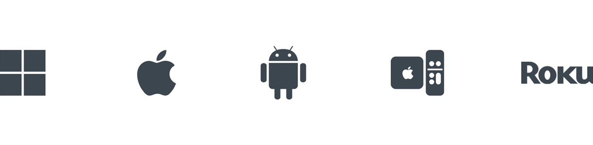
Windows (UWP), iOS (mobile and tablet), Android (mobile and tablet), TVOS and Roku.
Knowing that continued education and certification prep is key for IT professionals, we learned that providing access to content on the go and the ability to view content offline would increase how often learners train and the probability that they would renew their subscriptions.
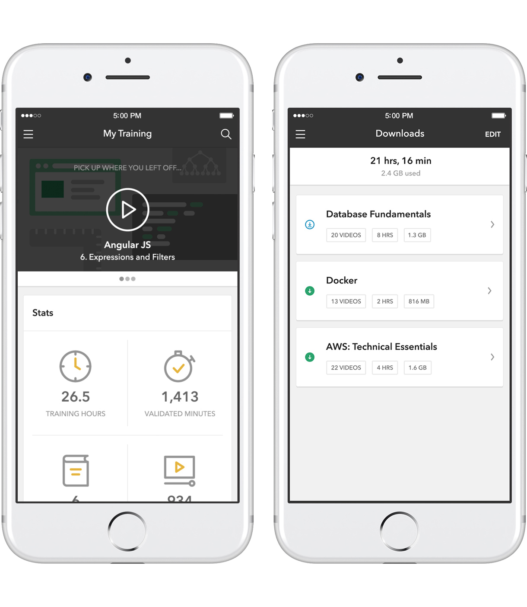
Learners can pick up where they left off and download content for offline viewing. (iOS)
The UI was built upon a card metaphor. This created a modality for content that could easily scale between the web, mobile, tablet, and native desktop platforms.
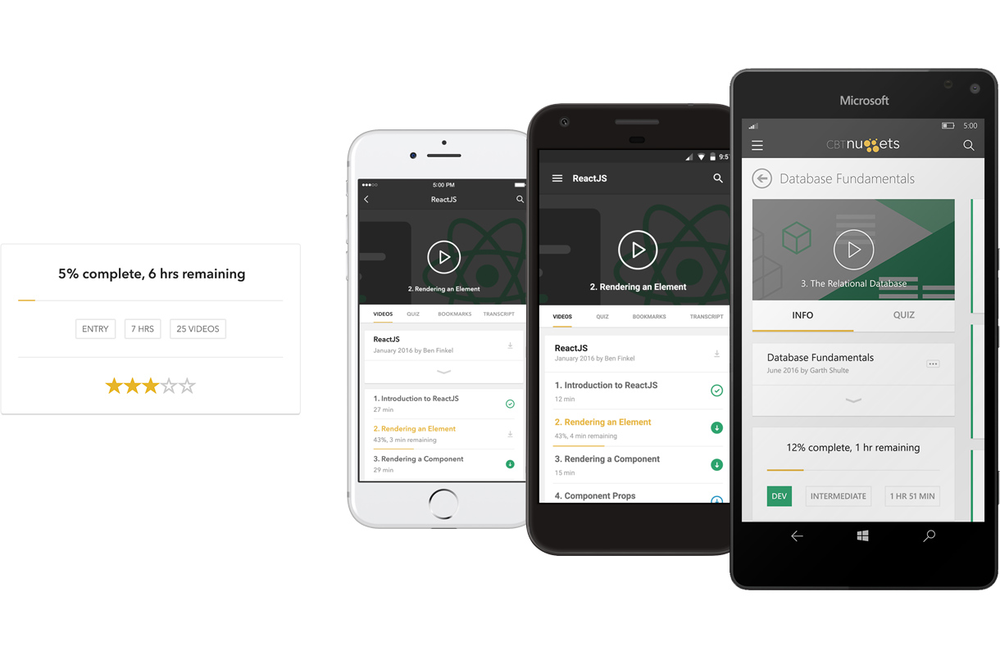
Card metephor scales seamlessly between platforms.
Illustrations were meant to add a visually unique identity for each course, but were purposely designed to act as simplistically subdued background elements.
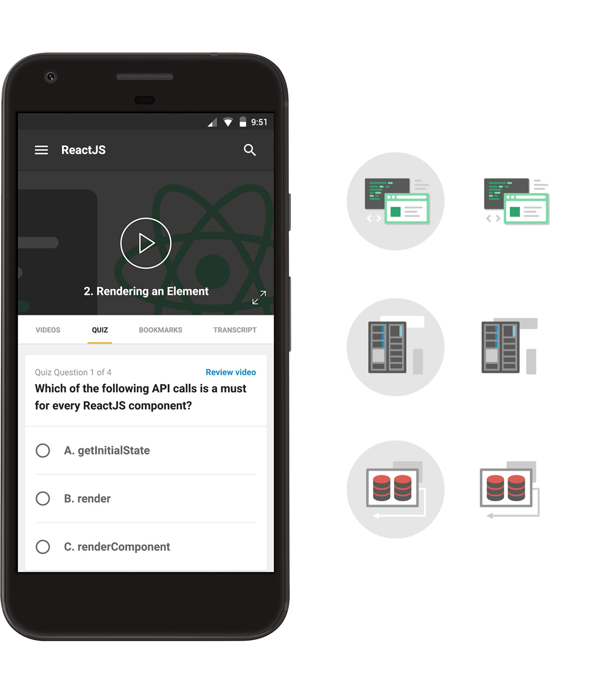
Learners answer quiz questions to validate what they've learned. (Android)
The 10-foot experience for TVOS and Roku adopted an inverted interface to better embrace the native platforms and reduce visual fatigue on brighter and larger displays often found in a darker setting.
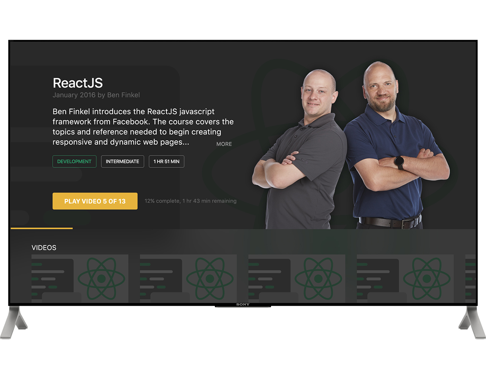
Course detail screen. (TVOS)
Beginning with the brand color, Nugget Gold, I extracted a primary accent color using triads on the color wheel. The remaining 4 colors were derived by calculating a similar distance in each RGB direction.
A monoline iconography style was designed to be lightweight, simple and easily scalable across multiple device platforms and implementation sizes.
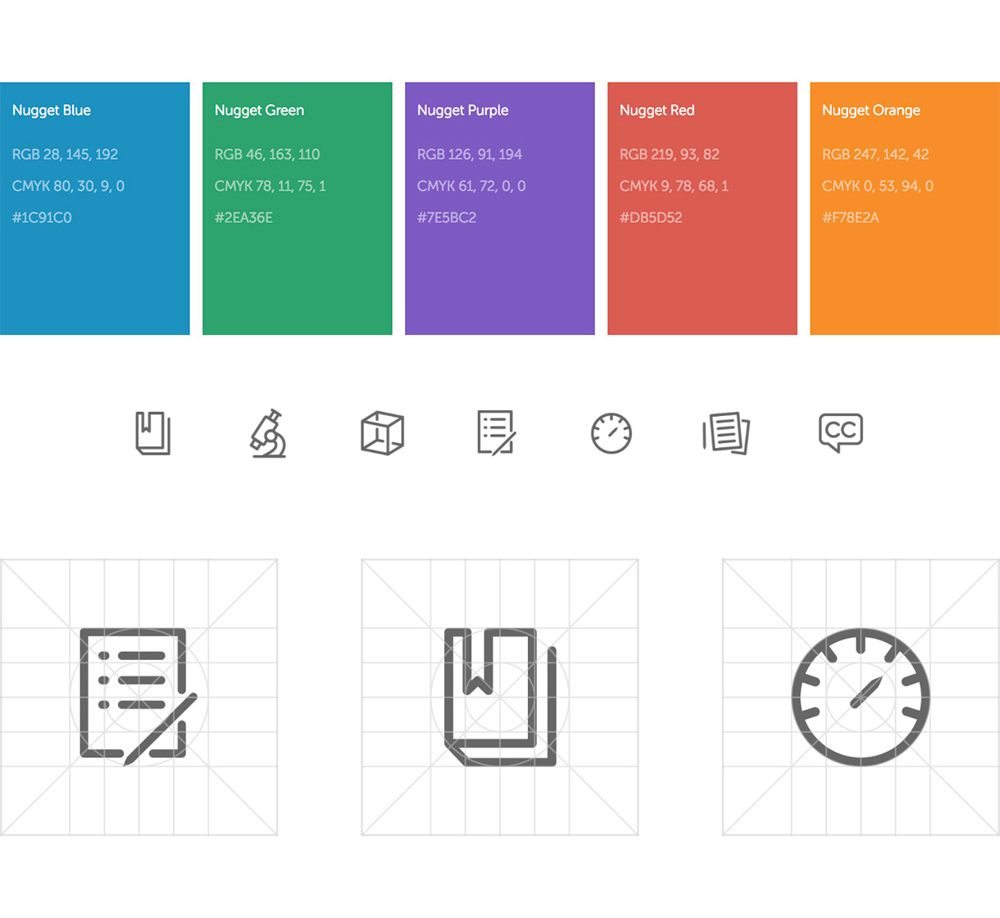
Color and iconography systems.
Development was supported by 3 primary artifacts: A comprehensive design specification document, a collection of prototypes and an internal documentation of the design system.
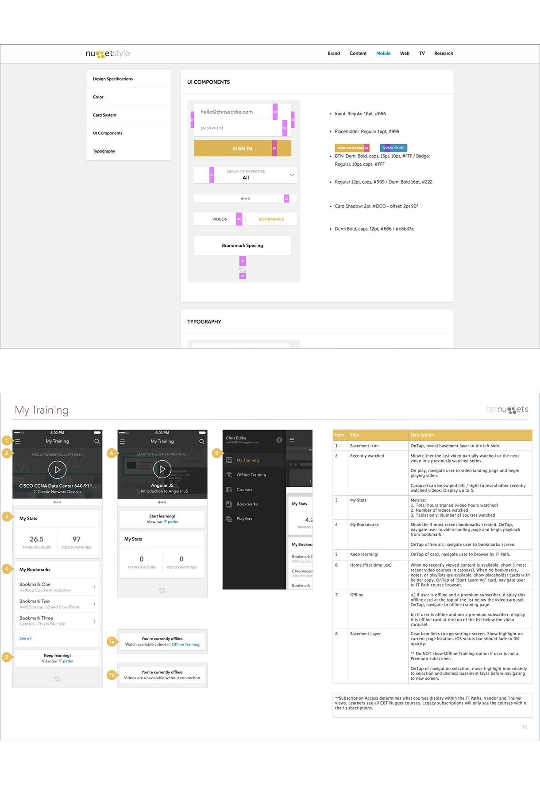
Design system and specification documentation samples.
In addition to remote and in-person moderated usability testing, we validated success by monitoring change in our primary KPIs, measuring MAU and session data in Fabric analytics, and App Store reviews. Currently iOS and Android are both 5-star apps.
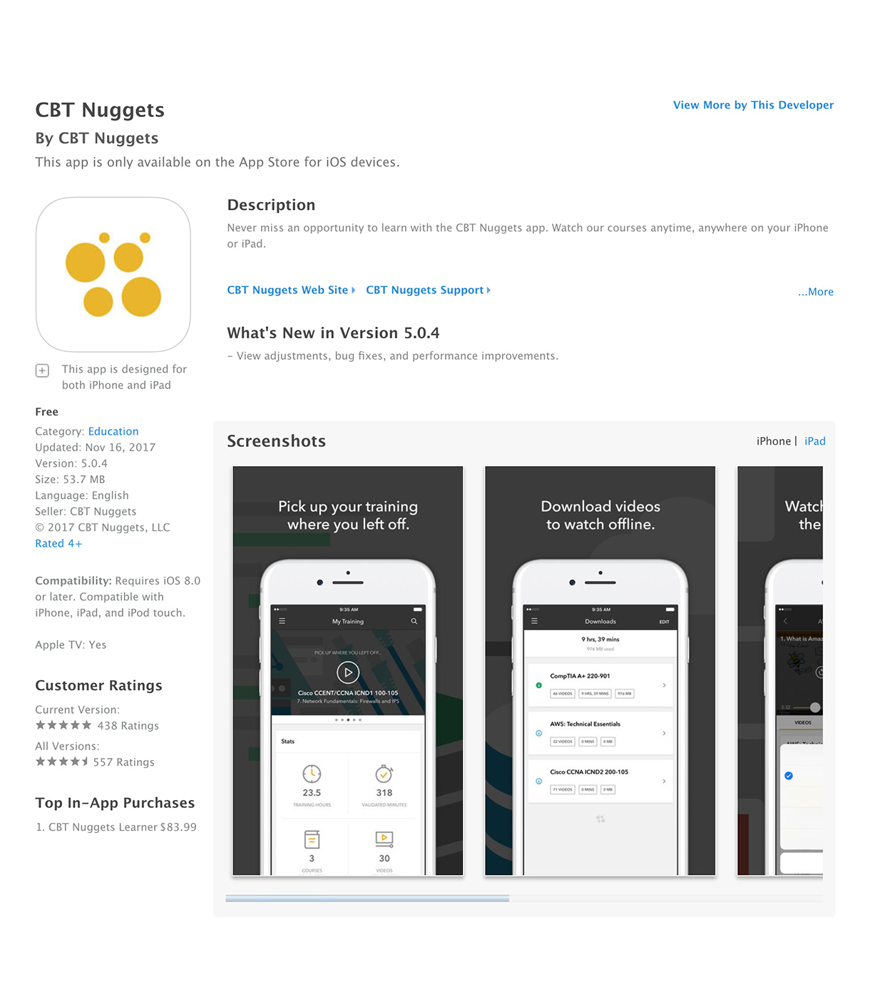
Available now in the Apple, Android and Windows app stores.
Date: May 2014 - September 2017
Company: CBT Nuggets
Project: CBTN Training Apps
Role: Design Lead
Team: 7 software engineers, 2 stakeholders, 2 quality assurance testers.
Learner Experience 2.0
We built an app suite that increased engagement and renewals by making our content available anytime, anywhere, but to revolutionize the learning experience we learned that we needed to re-imagine it completely. Learner Experience 2.0 (LX-2) is an effort that I lead to challenge our greatest assumptions about our business and what we know about online education.
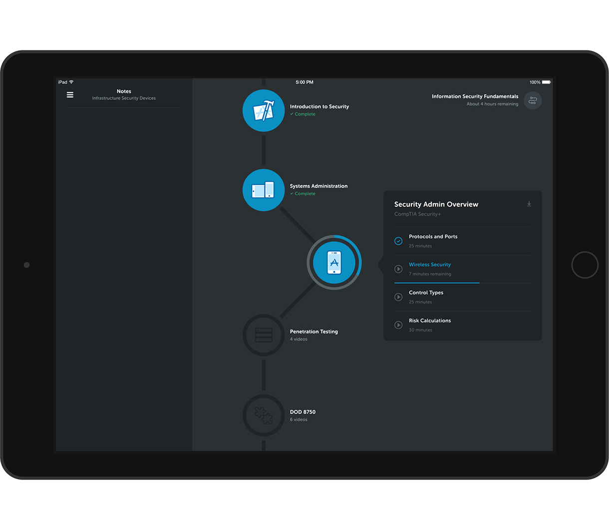
Experience centers around a goal-oriented Learning Path.
The interface is separated into two spaces: The 2/3, which contains the learning content, and the 1/3, which contains mobile app-like auxiliary controls like notes, quizzes, games, browse, and search. In an instance where two concurrent devices are present, these modes are meant to be able to break into their own individual devices while synchronously maintaining the learning experience.
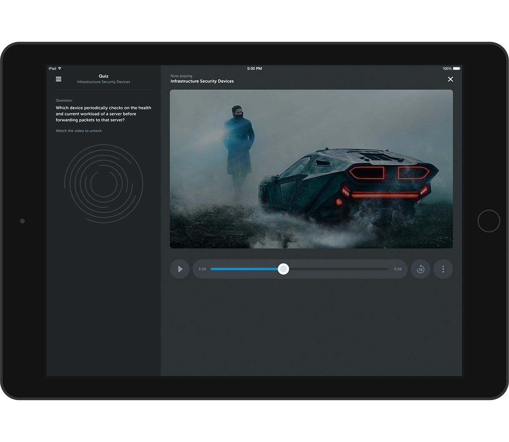
Dual modalities. 1/3 and 2/3.
Learner Experience 2.0 will replace the current training app suite and become the primary method for consuming CBT Nuggets learning content. A major part of this effort is to create a platform that can transcend video content alone and host a wide array of learning tools in one cohesive experience.
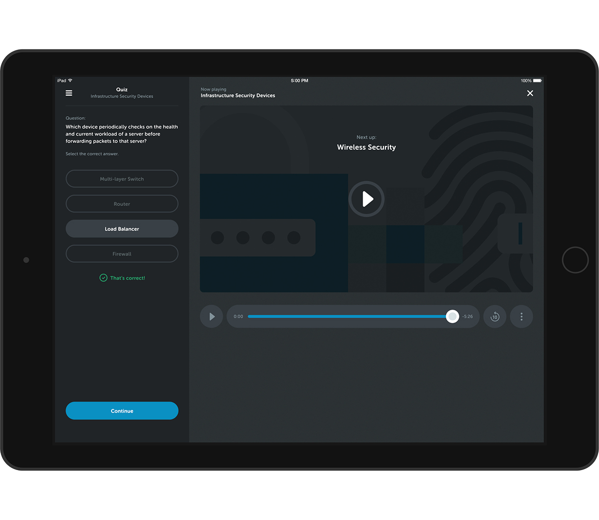
Quiz experience.
Date: May 2017 - January 2018
Company: CBT Nuggets
Project: Learner Experience 2.0
Role: Design Lead
Team: 7 software engineers, 2 stakeholders, 2 quality assurance testers.